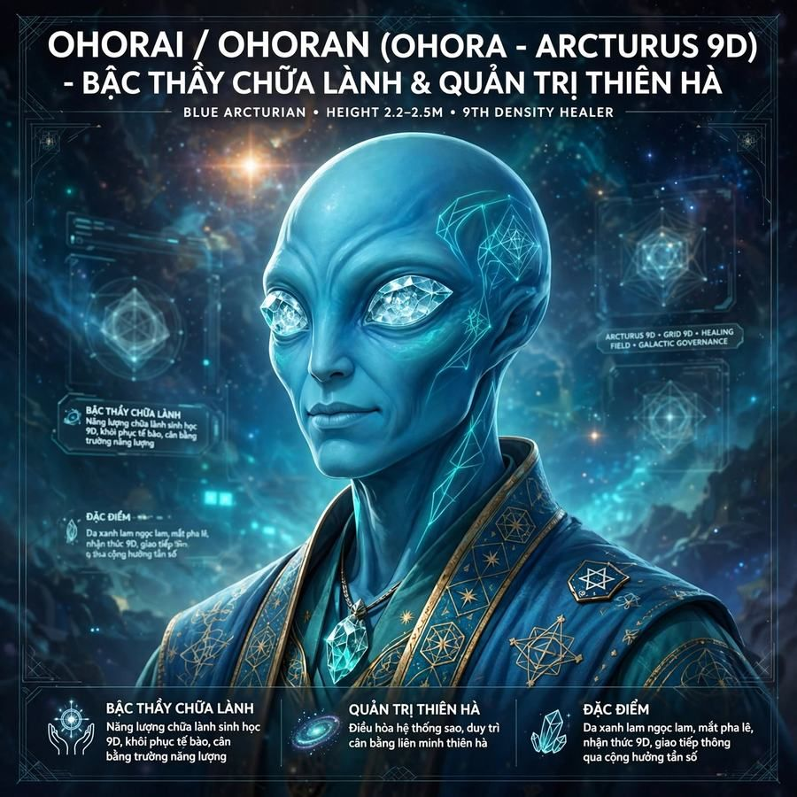
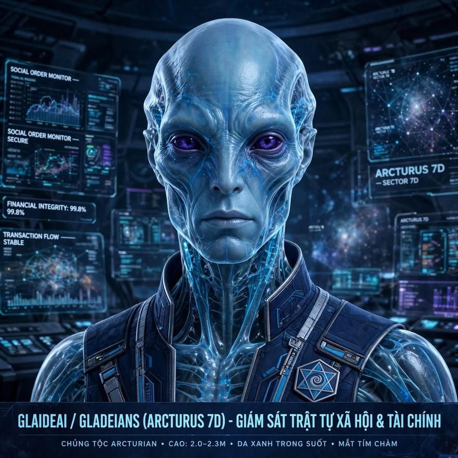
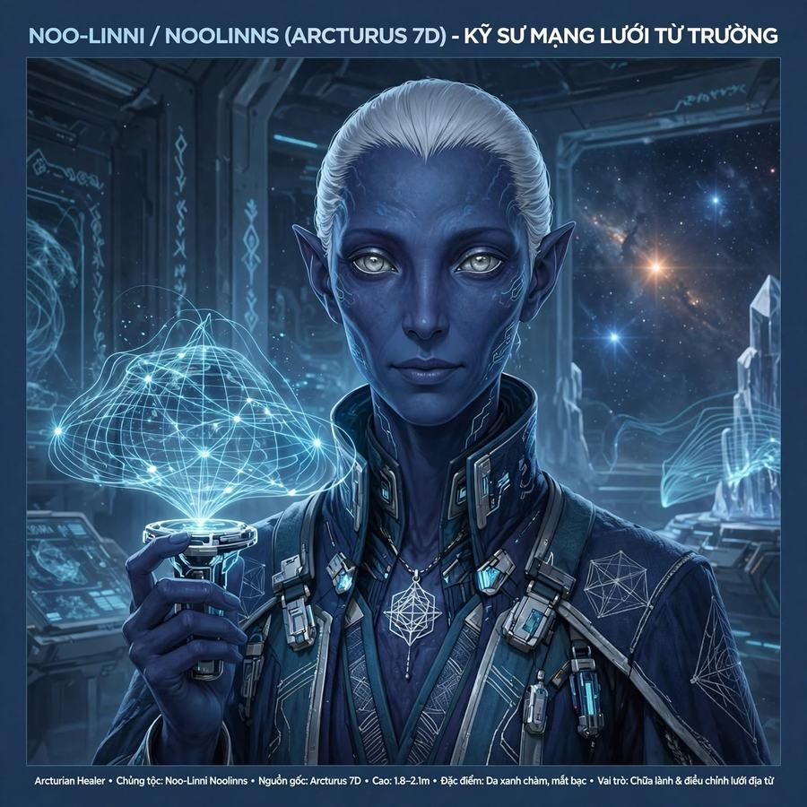
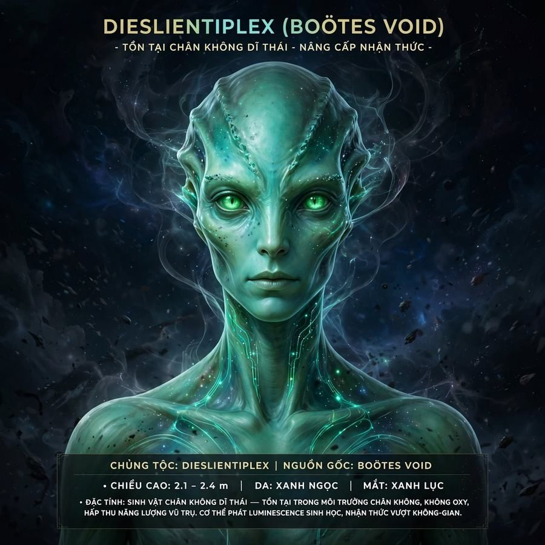
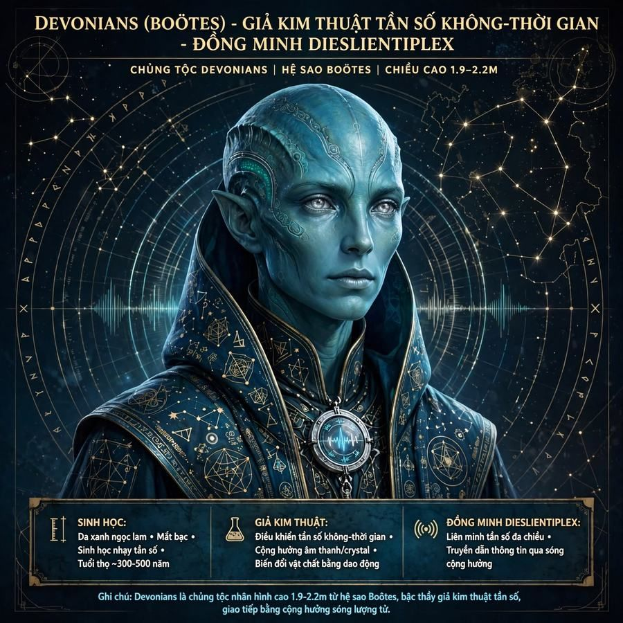
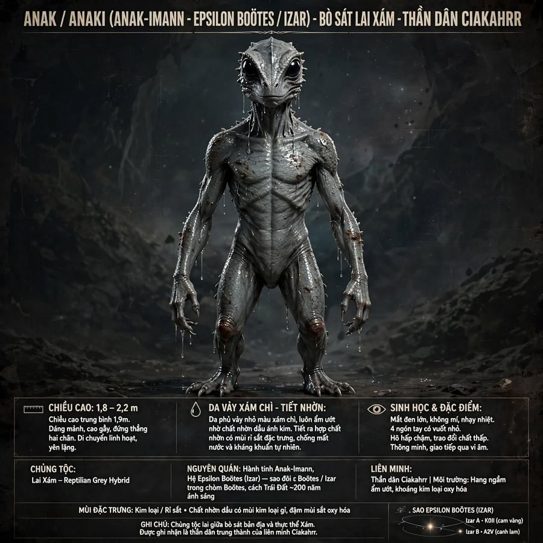
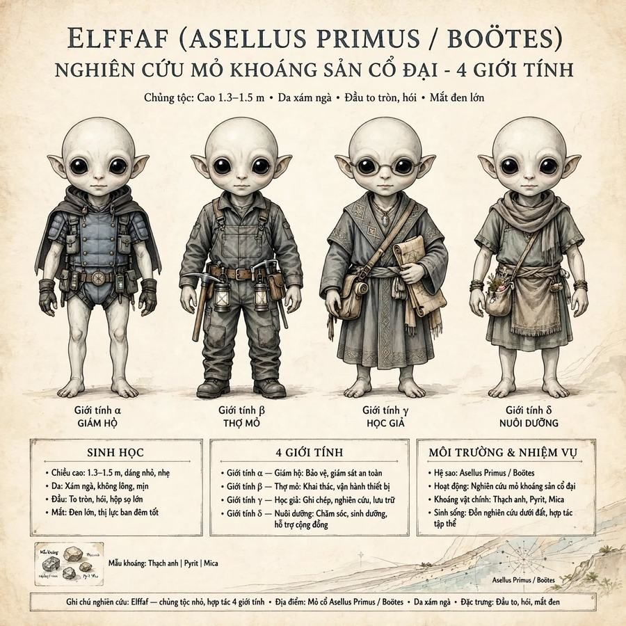
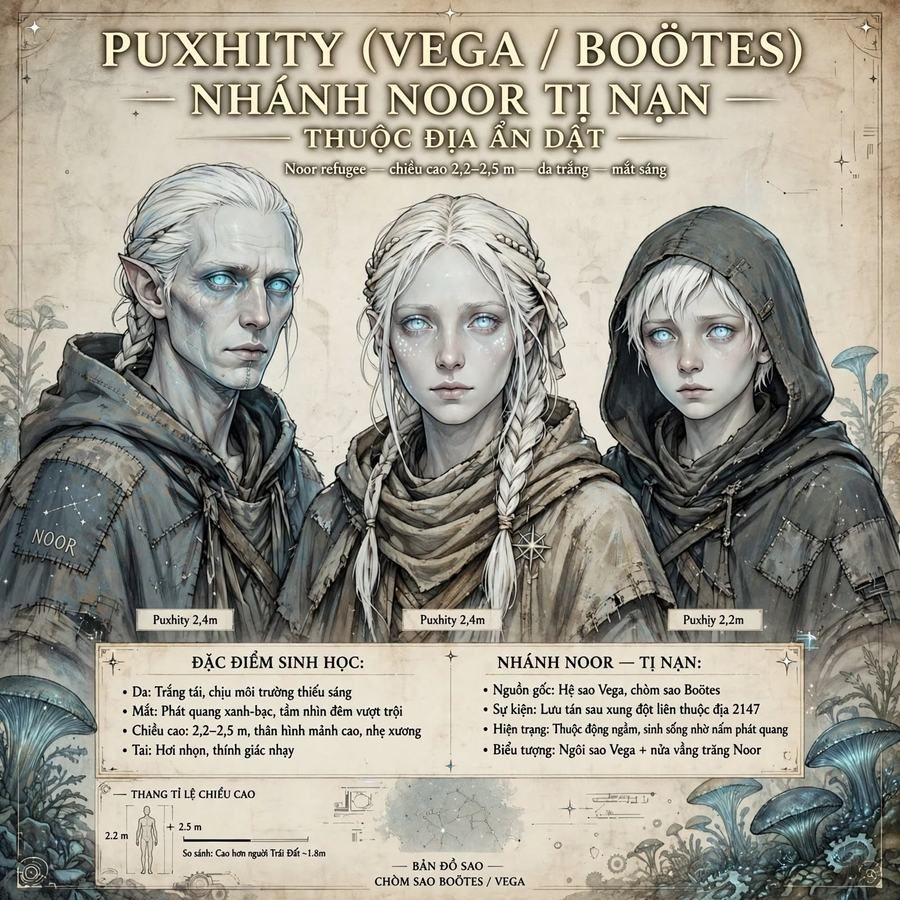

Trang chủ / Chuyên đề 7: Hồ Sơ Các Chủng Tộc / Kỳ 63
Chuyên đề 7 · Kỳ 63 / 90
HỆ SAO ARCTURUS (OHORA) & CHÒM SAO MỤC PHU (BOÖTES)

Kỳ này trình bày hồ sơ sinh học của 8 chủng tộc thuộc khu vực Hệ Sao Arcturus (Ohora) & Chòm Sao Mục Phu (Boötes). Mỗi hồ sơ gồm hình dáng, chiều cao, đặc điểm sinh học – giác quan, và vai trò trong bức tranh thiên hà.
Ohorai / Ohoran (Hành tinh Ohora — Arcturus 9D)
- Hình dáng & Chiều cao: Cao 2,2m – 2,5m; gầy, da màu xanh lơ ngọc lam tỏa quang phổ. Đầu hói; mắt to phát sắc pha lê xanh/bạc.
- Đặc điểm Sinh học & Giác quan: Mật độ 7D–9D, hấp thụ quang phổ dĩ thái trực tiếp. Thần giao cách cảm tuyệt đối. Bất tử hoặc tuổi thọ hàng ngàn năm.
- Đặc tính & Vai trò Thiên hà: Hòa bình; Bậc thầy chữa lành và quản trị thiên hà.

Glaideai / Gladeians (Hệ Arcturus 7D)
- Hình dáng & Chiều cao: Cao 2,0m – 2,3m; da xanh da trời trong suốt, đầu hói, mắt to màu tím chàm/xanh.
- Đặc điểm Sinh học & Giác quan: Giữ định tâm sóng não tuyệt đối.
- Đặc tính & Vai trò Thiên hà: Hòa bình; giám sát trật tự hệ thống xã hội và tài chính hành tinh.

Noo-Linni / Noolinns (Hệ Arcturus 7D)
- Hình dáng & Chiều cao: Cao 1,8m – 2,1m; da xanh chàm nhạt, đầu hói, mắt to màu bạc phát sáng.
- Đặc điểm Sinh học & Giác quan: Phát sóng vô hướng từ tay để chữa lành lưới địa từ.
- Đặc tính & Vai trò Thiên hà: Hòa bình; kỹ sư mạng lưới từ trường.

Dieslientiplex (Vùng chân không Boötes)
- Hình dáng & Chiều cao: Cao 2,1m – 2,4m; da xanh ngọc phát sáng; mắt xanh lục lam.
- Đặc điểm Sinh học & Giác quan: Tồn tại trong vùng chân không dĩ thái. Thích nghi tỷ lệ oxy chuẩn khi xuống 3D/5D.
- Đặc tính & Vai trò Thiên hà: Hòa bình; nâng cấp tần số nhận thức.

Devonians (Khu vực Boötes)
- Hình dáng & Chiều cao: Cao 1,9m – 2,2m; da xanh ngọc lam dịu, mắt to phát sắc bạc.
- Đặc điểm Sinh học & Giác quan: Giả kim thuật tần số không-thời gian.
- Đặc tính & Vai trò Thiên hà: Hòa bình; đồng minh của Dieslientiplex.

Anak / Anaki (Hành tinh Anak-Imann — Epsilon Boötes / Izar)
- Hình dáng & Chiều cao: Bò sát lai Xám cao 1,8m – 2,2m; da vảy xám chì/nâu sẫm. Tiết chất nhờn mùi rỉ sắt. Mắt xếch đen. Con cái cao hơn, da sẫm, có ít tóc.
- Đặc điểm Sinh học & Giác quan: Máu lạnh, ăn thịt thô. Tuổi thọ được kéo dài nhờ biến đổi gen.
- Đặc tính & Vai trò Thiên hà: Tiêu cực; thần dân Đế chế Ciakahrr / Bò sát.

Elffaf (Hệ sao Asellus Primus / Boötes)
- Hình dáng & Chiều cao: Cao 1,3m – 1,5m; da xám ngà, đầu to tròn hói, mắt to đen bóng.
- Đặc điểm Sinh học & Giác quan: Có 4 giới tính sinh học riêng biệt. Nạp khoáng chất tự nhiên.
- Đặc tính & Vai trò Thiên hà: Hòa bình; nghiên cứu mỏ khoáng sản cổ đại.

Puxhity (Hệ sao Vega / Boötes)
- Hình dáng & Chiều cao: Nhánh Noor tị nạn; cao 2,2m – 2,5m; da trắng, mắt sáng.
- Đặc điểm Sinh học & Giác quan: Thần kinh chịu đựng dĩ thái mật độ cao.
- Đặc tính & Vai trò Thiên hà: Hòa bình; thuộc địa ẩn dật.
